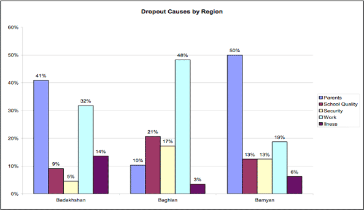

Charles Darwin University
Academic Assignments:Reports
Reading and writing about data
Academic writing in many sibject areas requires the use of graphic. THis may include technical diagram, illustrations or data presented in graphs and table. It is important if you include graphics that you include them appropriately in your writing.
This information will introduce you to some ways of intergrating graphics into your academic written work.
Reading and writing about graphics
What do graphic do?
Graphics can convey complex information, showing relationships and trends, and sort and classify data. They can also clarify technical ideas and help to emphasise important points. There are different types of graphics. These may include:
Writing about data
Getting the main idea
One of the most important things to do before you start writing about data is to ensure that you have understood the main idea of what the data shows, or of what you want the data to show. In order to do this, you should first identify the main features of the graph or table you are going to describe. Ask:
Example 1 - Why children in Afghanistan leave school

Ref: Aga Khan Foundation 2007, Why do children leave school?, Afghanistan
It’s interesting to see the differences between boys and girls when looking at reasons for dropout. The reason cited most often by boys for leaving school is that they have to work to help their families whereas girls are leaving predominantly because they are targets of traditional practices or customs, including underage marriage.
The data shows that 61% of boys left school because of the work while only 12% of girls left school because of the work (mainly household chores). 53% of girls dropped out because of their parents while only 6% of boys left school for the same reason. Other factors affecting girls’ survival rates in school are distance to schools and security. Most of the girls said that the long distance between home and school is not secure for them to travel alone, and hence they leave school.
Example 2 - Dropout differences by calendar
Ref: Aga Khan Foundation 2007, Why do children leave school? Afghanistan.
When analysing the dates of dropout, an interesting trend emerges. Most children drop out from school during the main farming seasons – between March and June. From those students interviewed, 68% of them left school during that time. (Note that 68% is a total of the dropout rate from March to June).
Example 3 - Getting children back into school
None of the students interviewed were happy about leaving school and all of them wanted to go back to school at some point if they had the chance to go.
Less than half of the students think that they would be able to return to school at a later date. Overwhelmingly, the students that have dropped out voiced uncertainty about their future plans, since the decision to dropout out of school did not seem to be theirs to begin with, but rather a parental decision.
Vocabulary: The number of graphs
| Number | Most
The majority of ... The greatest number of ... More than |
The least A minority of ... The least number of ... Less than |
|---|---|---|
| Percentages | A high percentage of ... A higher percentage of ... | A low percentage of ... A low percentage of ... |
| Fraction | The greatest Part | The smallest Part |
Sometimes we need to talk about changes in numbers, fractions and percentages. For example:
| 2000 | 2005 |
| 1200 | 1800 |
Look at another example showing an increase over six years:
| 2002 2004 2006 2008 |
|---|
| 500 1000 3000 12000 |
Use "trebled," "-fold," and "times:"
Look at another example showing a decrease over six years:
| 2002 2004 2006 2008 |
|---|
| 1000 800 400 100 |
Use fractions:
Example 4 - Graph example
Ref: IELTS graph # 31
The graph shows the fluctuation in the number of people at a London underground station over the course of a day.
The busiest time of the day is in the morning. There is a sharp increase between 06:00 and 08:00, with 400 people using the station at 8 o'clock. After this, the numbers drop quickly to less than 200 at 10 o'clock. Between 11 am and 3 pm the number rises, with a plateau of just under 300 people using the station.
In the afternoon, numbers decline, with less than 100 using the station at 4 pm. There is then a rapid rise to a peak of 380 at 6pm. After 7 pm, numbers fall significantly, with only a slight increase again at 8pm, tailing off after 9 pm.
Overall, the graph shows that the station is most crowded in the early morning and early evening periods.
Other useful expressions which will help you to describe change
| Movement down(verb)
|
Movement down(noun)
|
Movement up(verbs)
|
Movement up(nouns)
|
| No movement
|
Reached the highest point or lower points
|
||
| adjective
|
Adverbs
|
||
| Prepositions: Time Expressions: Past
|
Time expression:future. By 2020, it is expected to have reached ... By 2020, the total is projected to be ... |
Example 5 - Comparison and contrast
The causes of dropout are different from one region to another. As is evident from this graph, parents were cited as the main reason for children not continuing education in Bamyan and Badakhshan. This aligns with external reports of the high rates of marriage for young girls in these two provinces.
In contrast, work is the main cause of dropout in Baghlan province. Baghlan is one of the most productive and populated provinces of Afghanistan where there is a lot of fertile land and industry. These attributes create many more work opportunities for young children in this province as compared to the other two provinces.
School quality is also a serious problem in Baghlan compared to the two other regions. Evaluation surveys show that the number of students in a classroom in Baghlan is three times more than Badakhshan and Bamyan province.
In contrast, illness is a more serious problem in Badakhshan compared to Baghlan and Bamyan. Badakhshan reports indicate that while working in the fields, some students have become addicted to opium in Badakhshan, which leads them to drop out of school.
| Words and Phrases for comparing | |
|---|---|
| Comapared to X.... Compared to Y..... |
X is more than Y X is less than Y |
| In comparison, X is... In contrast, Y is ... |
X is - er than Y (higher than, stronger than) X is not as much as Y |
| In comparison with X.... In comparison to X.... In contrast to X On the other hand |
|
| X in comparison to Y is... X in comparison with Y is... X in constract to Y is... |
More/less likely to |
| X is similar to/comparable to/with Y in that … There are similarities between X and Y |
In the same way.... Equally... Similarly... |
| X is different to Y in that... There are differences between X and Y. X differs from Y in that … X is …. whereas/while Y is … |